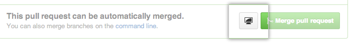
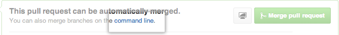
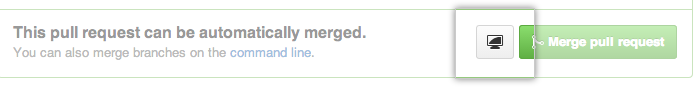
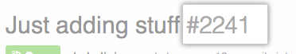

If someone has sent you a pull request from a fork or branch of your repository, you can check out and verify the changes on your local computer.
Modifying an active pull request locally
- In any repository's right sidebar, click Pull Requests.

- In the "Pull Requests" list, click the pull request you'd like to merge.
- At the bottom of the pull request, you have two choices for fetching the pull request locally:
- If you have GitHub for Mac or GitHub for Windows installed, click Check out this branch. 
- Otherwise, click command line. Follow the sequence of steps to bring down the proposed pull request. 
- If you have GitHub for Mac or GitHub for Windows installed, click Check out this branch. 
Modifying an inactive pull request locally
An inactive pull request is one whose owner has either stopped responding, or, more likely, has deleted their fork. If a fork was deleted, the pull request can still be merged. However, if you want to make changes to a pull request and the author is not responding, you'll need to perform some additional steps to update the pull request.
Once a pull request is opened, GitHub stores all of the changes online for you. In other words, commits in a pull request are available in a repository even before the PR is merged. That means you can fetch an open pull request and recreate it as your own.
Anyone can work with a previously opened pull request to continue working on it, test it out, or even open a new pull request with additional changes. However, only collaborators with push access can merge pull requests.
- In any repository's right sidebar, click Pull Requests.
- In the "Pull Requests" list, click the pull request you'd like to merge.
- Find the ID number of the inactive pull request. This is the sequence of digits right after the pull request's title. 
-
Open up your terminal (for Linux and Mac users) or your command prompt (for Windows users), and fetch the reference to the pull request based on its ID number, creating a new branch in the process.
git fetch origin pull/ID/head:BRANCHNAME -
Switch to the new branch that's based on this pull request:
[master] $ git checkout BRANCHNAME # Switched to a new branch 'BRANCHNAME' At this point, you can do anything you want with this branch. You can run some local tests, or merge other branches into it, including
master. Make modifications as you see fit!-
When you're ready, you can push the new branch up:
[pull-inactive-pull-request] $ git push origin BRANCHNAME # Counting objects: 32, done. # Delta compression using up to 8 threads. # Compressing objects: 100% (26/26), done. # Writing objects: 100% (29/29), 74.94 KiB | 0 bytes/s, done. # Total 29 (delta 8), reused 0 (delta 0) # To https://github.com/username/repository.git # * [new branch] BRANCHNAME -> BRANCHNAME
Create a new pull request with your new branch.
Tips
-
The remote
refs/pull/namespace is read-only. If you try to push any commits there, you'll see this error:! [remote rejected] HEAD -> refs/pull/1/head (deny updating a hidden ref) error: failed to push some refs to 'git@github.local:USERNAME/REPOSITORY.git'
When you remove or rename a remote reference, your local
refs/pull/origin/namespace will not be affected by calls togit-remote.